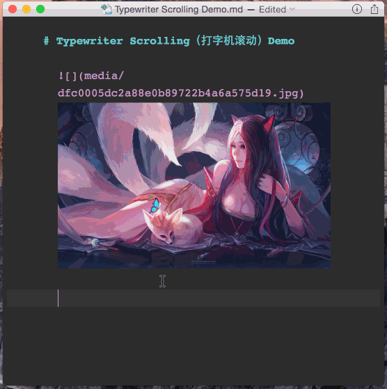
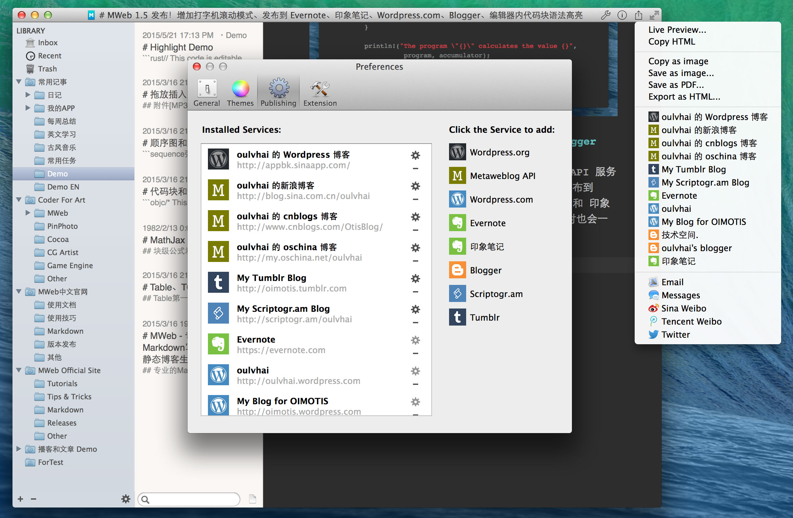
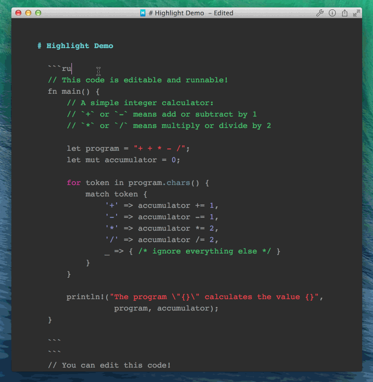

MWeb 1.5 发布！增加打字机滚动模式、发布到 Evernote、印象笔记、Wordpress.com、Blogger、编辑器内代码块语法高亮
打字机滚动模式（Typewriter Scrolling）
快捷键：CMD + Option + T，菜单：View - Typewriter Scrolling ，效果如下图：

发布到 Evernote、印象笔记、Wordpress.com、Blogger
一如之前的发布到 Wordpress 博客和 Metaweblog API 服务的功能一样，如果文档内有图片，也会一并发布，其中发布到 Blogger 时图片会保存到 Picasa。然后 Evernote 和 印象笔记还支持发布附件，比如说你拖进来一个 MP3，发布时也会一并发布。

编辑器内代码块语法高亮
支持大量常用代码，如图：

其他
- 增加 github issues https://github.com/oulvhai/MWeb-isssues/issues，下个版本将放入 Help 菜单。
- 增加改变当前行背景色选项，菜单：
View-Change Current Line Background Color。 - 外部模式右键增加 Expand All 和 Collapse All。
- 一些 Bug 修正
MWeb 相关网址：
付费版仅售 $9.9, MAS 网址：https://itunes.apple.com/cn/app/mweb-pro-markdown-writing/id954188948?l=zh&ls=1&mt=12
免费版 MAS 网址：https://itunes.apple.com/cn/app/mweb-lite-pro-markdown-writing/id979033429?l=zh&ls=1&mt=12
官网：http://zh.mweb.im/